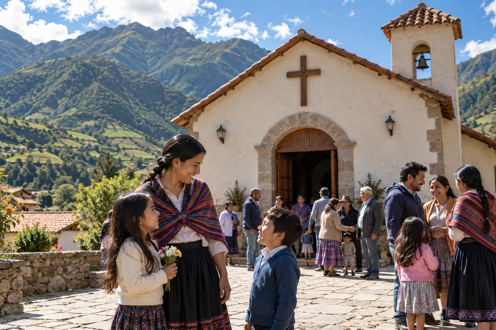
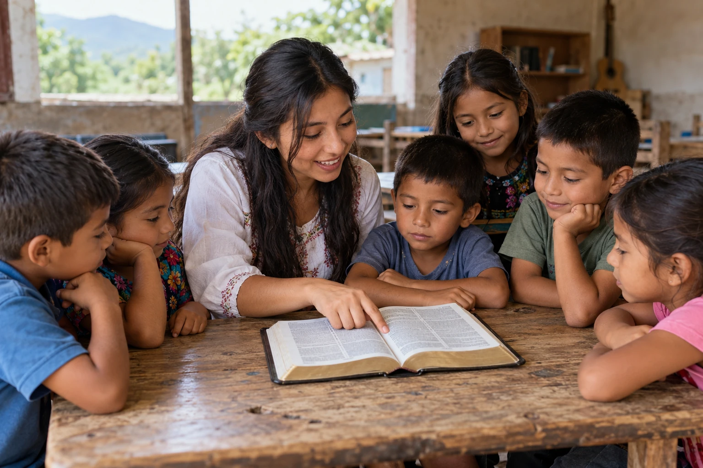
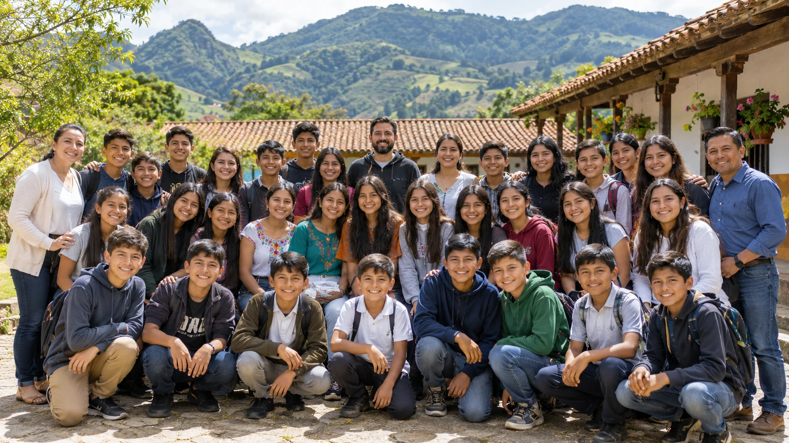
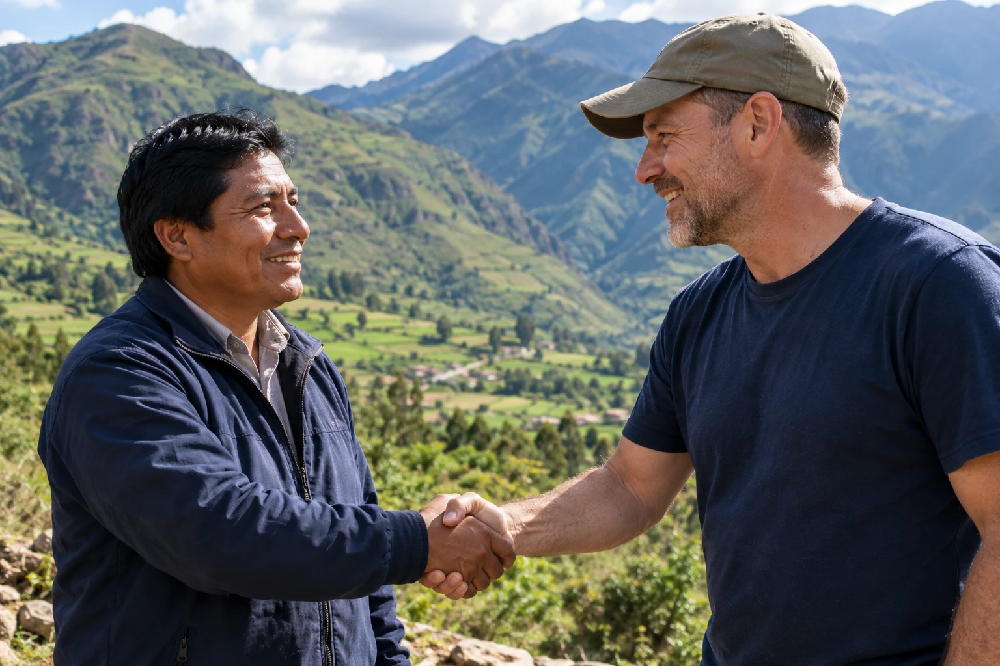

Jesus Changes Lives
We proclaim Jesus Christ and invite people to know Him personally.
About Jesus Generation
We proclaim the Gospel, make disciples, and equip Christian leaders to reach the next generation.
Jesus Generation connects churches and supporters with local leaders serving schools and communities internationally.
Reach. Equip. Multiply.
Our Story
For decades, local leaders have shared the Gospel and discipled young people across Latin America and beyond. The international ministry continued even when Mission Generation's U.S. public presence closed.
Jesus Generation restores that connection, inviting churches, mission teams, and supporters to strengthen the work already underway.
Jesus Generation grows out of decades of international ministry, trusted relationships, and Gospel work.
Read our story
Sharing the Gospel and building relationships in schools and communities.

Connecting U.S. supporters with evangelism and discipleship abroad.
Equipping local leaders for ongoing ministry to students and families.

National leaders continued serving while the U.S. public presence was quiet.
Restoring that connection and inviting a new generation of partners.
We proclaim Jesus Christ and invite people to know Him personally.
We teach Scripture and help believers put their faith into practice.
We strengthen local leaders to disciple others in their schools and communities.
School chaplaincy creates an ongoing presence for Gospel outreach and discipleship. Missions and leadership development strengthen the people who continue serving long after a visiting team returns home.
Local leaders, chaplains, churches, and ministry partners share the Gospel and disciple the next generation.
0 schools in the ministry network
0 nations
Local leaders carry the mission. Churches and supporters help strengthen their work.
Providing direction and coordinating the mission.
Strengthening ministry across nations.
Equipping chaplains and serving local communities.

Connecting churches and supporters with Gospel work.
We are committed to integrity, responsible stewardship, and care for those we serve.
Leadership guided by our mission and values.
Responsible use of ministry resources.
Keeping partners informed about the work.
Prioritizing the safety and dignity of children.
Equipping leaders for faithful service.
Respecting personal information and confidentiality.
Will you join the harvesters?
Help local leaders share the Gospel and disciple the next generation.